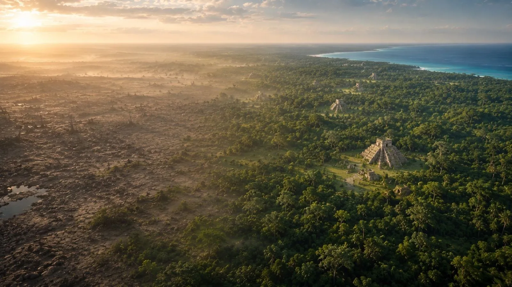
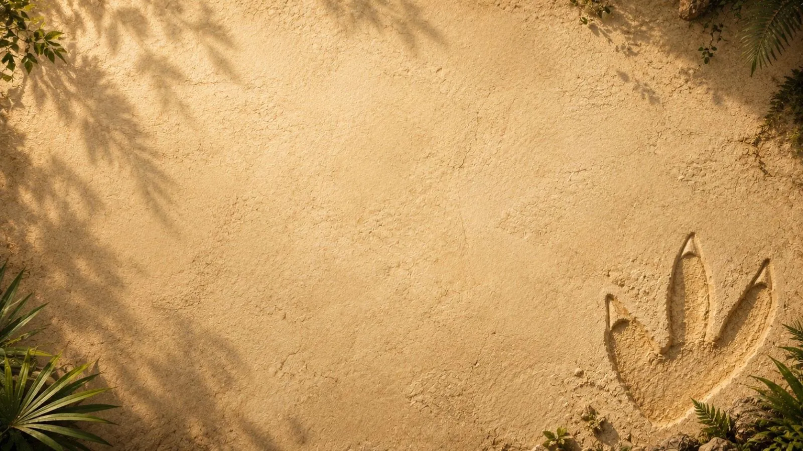
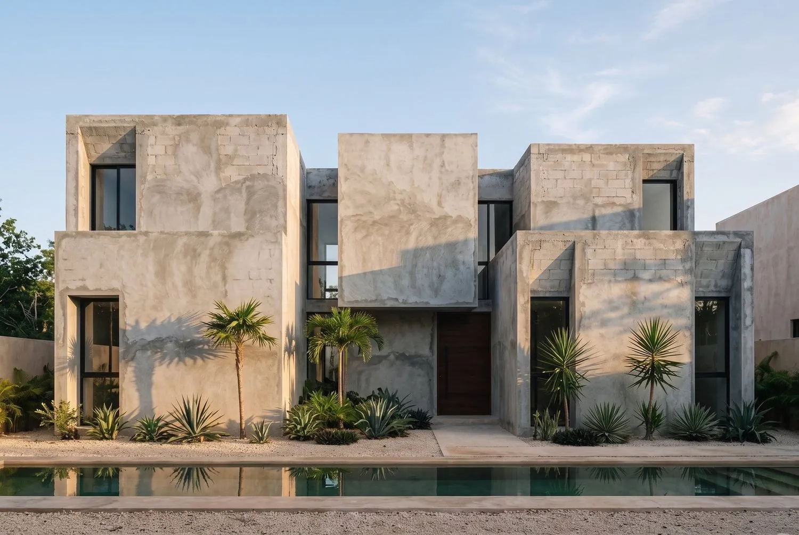
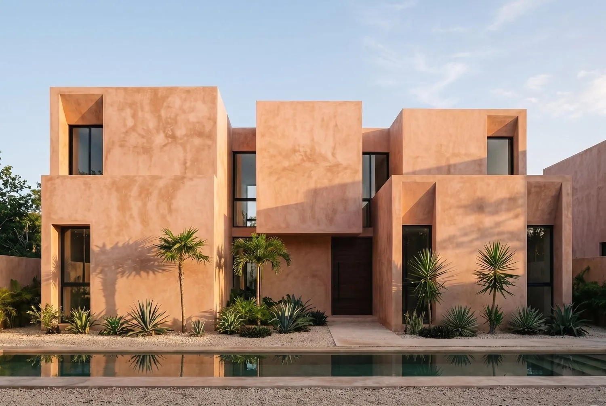

Chukum auténtico de la Península de Yucatán
Un recubrimiento natural con huella histórica. Resina del árbol de chukum y cal de la península, aplicado capa sobre capa.
Una tierra que guarda lo que pasa por ella.
Del impacto que marcó la península al material que hoy recubre sus muros. Sesenta y seis millones de años en tres capítulos.


Qué es el chukum
Un estuco natural de origen maya: resina del árbol de chukum mezclada con cal de la península. Los mayas lo usaron en sus ciudades y hoy recubre buena parte de la arquitectura de Tulum y la Riviera Maya. Se adhiere fuerte, repele el agua y aguanta el clima tropical.
- El árbol
- Havardia albicans, un árbol espinoso de la selva baja de Yucatán. Los mayas lo llamaron chukum y durante siglos le sacaron la corteza sin talar el árbol.
- La técnica
- La corteza se hierve para liberar sus taninos y el extracto se mezcla con cal hidratada. El resultado es una pasta que se aplica como estuco fino, capa sobre capa, sin pintura ni selladores.
- Hidrófugo natural
- Los mayas lo usaban para impermeabilizar cisternas y depósitos de agua. Por eso hoy recubre albercas, cenotes artificiales y baños: repele el agua y deja respirar el muro.
- Auténtico, no imitación
- El chukum auténtico lleva resina real del árbol. Las imitaciones acrílicas copian el color, pero no respiran ni envejecen como la cal.
- Listo para exportar
- Presentación en saco de 20 kg, elaborado en la Península de Yucatán, con ficha técnica y soporte para proyectos internacionales.
Seis acabados, una misma tierra
Pigmentos minerales sobre la misma base de resina y cal. Sin pintura: el color es el material. Elige uno y mira la misma casa antes y después.


Obra gris TerracotaArrastra la barra para ver la misma casa antes y después.
Pedir muestra de TerracotaDonde la historia se vuelve arquitectura
Muros y fachadas, albercas y cenotes, interiores, baños y mobiliario. Una sola pasta, aplicada capa sobre capa.
Preguntas frecuentes
Lo que arquitectos y aplicadores nos preguntan antes de pedir muestras.
¿Cuánto rinde un saco?
Un saco de 20 kg cubre alrededor de 4 m² a dos manos sobre un muro liso. En superficies rugosas o muy absorbentes el rendimiento baja; por eso confirmamos la cantidad con las medidas de tu obra.
¿Sirve para exteriores con sol y lluvia?
Sí. El chukum nació para el clima de Yucatán: repele el agua y deja respirar el muro, así que aguanta sol directo, humedad y salitre sin descascararse.
¿Se puede usar en albercas y cenotes?
Es uno de sus usos originales: los mayas impermeabilizaban cisternas con él. Hoy se aplica en albercas, espejos de agua y cenotes artificiales, con la preparación de base adecuada.
¿En qué se diferencia de un acabado tipo chukum acrílico?
El chukum auténtico lleva resina real del árbol y cal. Las imitaciones acrílicas copian el color, pero no respiran ni envejecen como la cal: con el tiempo se nota.
¿Envían fuera de México?
Sí. Elaboramos en la península y exportamos. Escríbenos con el destino y los metros cuadrados y te pasamos tiempos y costos de envío.
¿Puedo pedir muestras antes de decidir?
Sí. Te enviamos muestras físicas de los acabados que te interesen para que las veas con la luz de tu obra.
¿Cuánto chukum necesita tu obra?
Ingresa los metros cuadrados y calculamos los sacos de 20 kg.
Estimación con rendimiento promedio de 4 m² por saco a dos manos. Confirmamos cantidades exactas según superficie y acabado.

Desde Yucatán para el mundo.
Escríbenos y coordinamos muestras, ficha técnica y envío a tu obra, en México o afuera.
Rodrigo López Alam — Ventas y exportación+52 999 369 9488Guardar contacto